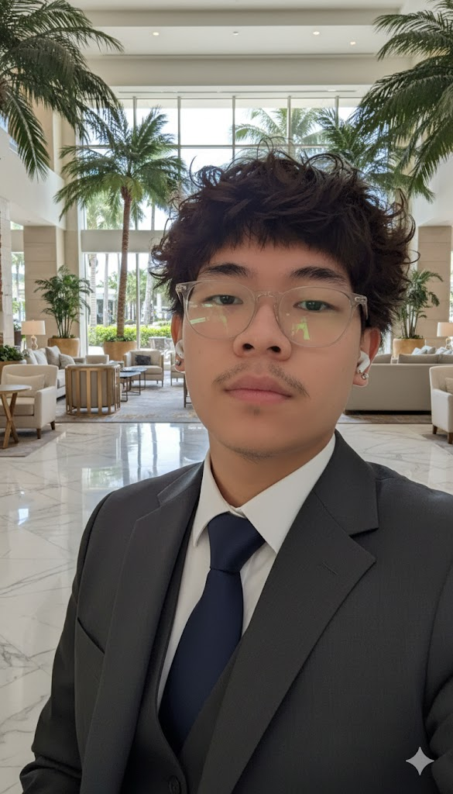

Je m'appelle Yohan DO CAO, j'ai 19 ans et je suis actuellement étudiant en BTS SIO option SISR en 2ᵉ année au Campus Montsouris à Paris.
Passionné par l'informatique, j'apprécie particulièrement la résolution de problèmes, les systèmes et les réseaux. Je suis sérieux, autonome et investi dans mon travail.
Technicien support informatique
Colas Digital Solutions
Mon projet professionnel est encore en construction, mais je souhaite poursuivre mes études jusqu'au Bachelor.